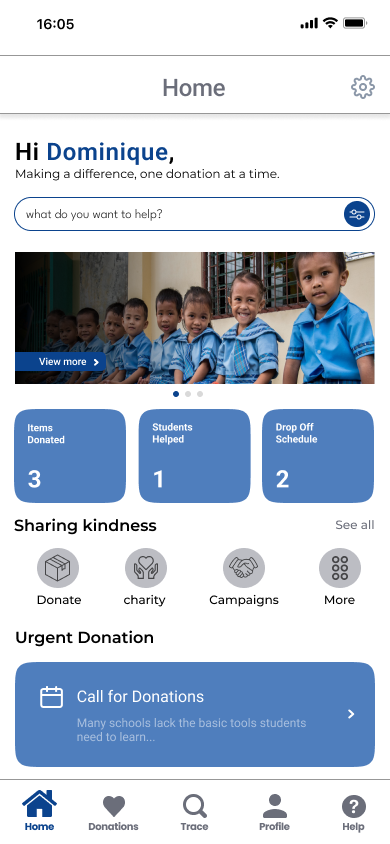
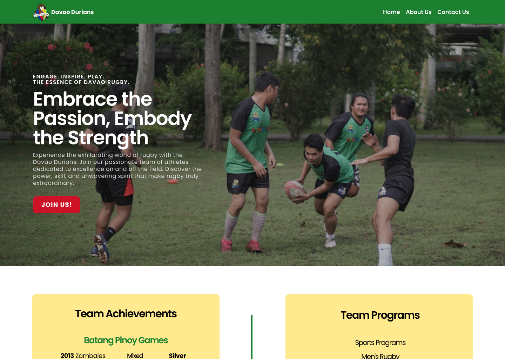

Projects
BrightAid | Blockchain Capstone
Developed a transparent donation tracking system using Hyperledger Fabric blockchain technology and Node.js. Integrated QR code scanning and web querying for audit trailing of donated educational assets.

CSSEC Official Website
Designed and deployed a live WordPress environment for the Computer Studies Student Executive Council (CSSEC) of the University. Focused on information architecture and administrative efficiency through the use of WordPress plugins.

Agile Project Manager | Davao Rugby Landing Page
Led a 3-person team using Agile methodology. Conducted a UI/UX design project in Figma and managed task prioritization via Trello for a professional client in requirement of the program's Human Computer Interaction (HCI) course.
